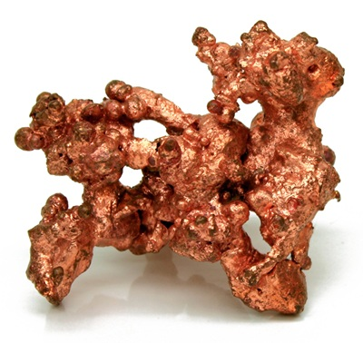
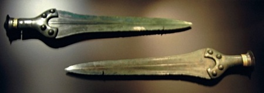
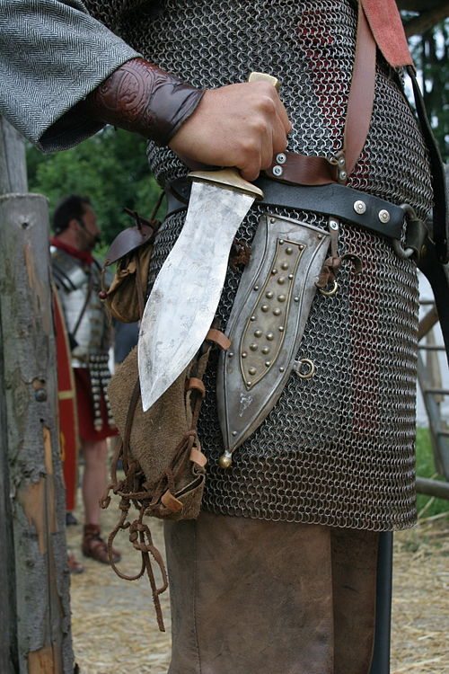

Swords are long-edged bladed weapons that have served as primary offensive arms since the Bronze Age. A typical sword consists of a blade, guard, grip, and pommel, often housed in a scabbard for protection. Early swords began as straight, double-edged designs for both cutting and thrusting, while later developments introduced curved forms—such as sabers and scimitars—optimized for slashing on horseback. Across cultures, these variations reflect advances in metallurgy, shifting battlefield tactics, and local artistic traditions.
Traditional swords were forged from bronze, iron, and eventually high-carbon steel, employing techniques like pattern welding or differential hardening to balance sharpness with flexibility. Beyond their martial role, swords have embodied honor and authority in ceremonies and mythology—from the katana of samurai Japan to the longsword of medieval Europe. In the modern era, they live on in fencing (foil, épée, saber), historical reenactment, and as collectible works of craftsmanship. Though obsolete on today’s battlefield, swords continue to captivate through their technical artistry, cultural symbolism, and enduring presence in literature and film
HISTORY
BRONZE AGE
The earliest swords emerged around 3300 BCE in regions like Anatolia (modern-day Turkey), made from arsenical bronze.
These early blades were short—more like elongated daggers—and often richly decorated.
Civilizations such as the Minoans, Egyptians, and Chinese Shang dynasty developed distinctive sword types like the khopesh and bronze jian
IRON AGE
The Iron Age is generally defined as the period from around 1200 BCE to 500 CE. The transition to iron allowed for longer, stronger blades.
Iconic swords from this era include:
The Greek xiphos and Roman gladius—short, double-edged weapons ideal for close combat.
The spatha, a longer Roman cavalry sword, which influenced medieval European designs.
In India, high-carbon steel (eventually known as Damascus steel) was developed, prized for its strength and flexibility.
MEDIEVAL AGE
The Middle Ages saw the rise of the arming sword, longsword, and claymore in Europe.
Swords became symbols of chivalry and nobility, often passed down through generations.
Japan perfected the katana, a curved, razor-sharp blade forged with layered steel.
China continued refining the jian and dao, each with unique combat styles.
EARLY MODERN AGE
The Early Modern Age (1500-1800) marks the end of the Middle ages and the start of the modern era. There was a decline in armor and made lighter, faster swords more effective and practical.
The rapier emerged in Europe—long, slender, and designed for dueling rather than battlefield use.
The sabre, with its curved blade, became a cavalry favorite, especially in Eastern Europe and the Ottoman Empire.
Swordsmanship evolved into an art form, giving rise to modern fencing
MODERN AGE
Nowadays, swords are revered in martial arts, historical reenactments, and as cultural artifacts.
Military officers still carry swords like the cutlass and dress sabre, but not to be used in combat.
Firearms reduced the sword’s battlefield role, but it remained a ceremonial and symbolic weapon.
FRUIT NINJA
Score: 0
Material Properties of Key Sword Materials (with Time Stamps)
Copper (~3000 BCE)
Nearly pure metal mined from riverbeds and rock seams.
Very soft and easy to dent or bend.
Low ability to hold a sharp edge.
How it was made
Hammered cold or at moderate heat into thin sheets or simple shapes.
Occasionally cast in basic clay molds and then hammered to refine.

By Native_Copper_Macro_Digon3.jpg: “Jonathan Zander (Digon3)"derivative work: Materialscientist (talk) - Native_Copper_Macro_Digon3.jpg, CC BY-SA 3.0, https://commons.wikimedia.org/w/index.php?curid=7223304
Bronze (~1600 BCE)
An early alloy of copper plus a bit of tin.
Stiffer and harder than copper alone.
Can become somewhat brittle if too much tin is added.
How it was made
Melted in small furnaces and poured into two-part clay or stone molds.
Heated and hammered to close tiny gaps and toughen the metal.

By Dbachmann, CC BY-SA 3.0, https://commons.wikimedia.org/w/index.php?curid=1500792
Wrought Iron (~1200 BCE)
the Bronze Age gave way to the Iron Age after a serious disruption of the tin trade: the population migrations of around 1200–1100 BCE reduced the shipment of tin around the Mediterranean and from Britain, limiting supplies and raising prices.
Nearly pure iron containing small amounts of slag (leftover rock).
Tough and bendy, with a fibrous, grain-y structure.
Not very hard unless further treated.
How it was made
Smelted in a charcoal-fired bloomery furnace, then hammered repeatedly to squeeze out impurities.
Edges sometimes carburized (exposed to charcoal) to add a thin hard layer.
Paired the large scutum (shield) with the gladius for point-first attacks. Repetitive thrusting drills on wooden dummies; “pugio” used in very close quarters.
Sword(s) Used
Gladius (Hispaniensis, Mainz, Pompeii types): 50–60 cm short sword optimized for stabbing. Pugio: Broad-bladed dagger for sidearm and finishing moves

By MatthiasKabel assumed. Own work assumed. CC BY-SA 3.0.https://commons.wikimedia.org/w/index.php?curid=191492
Early Medieval Swordsmanship, 500 CE - 1300 CE
Viking Swordplay
Context & Training
Combined one-hand and two-hand grips for versatility. Shield-wall tactics; blade binding to create openings.